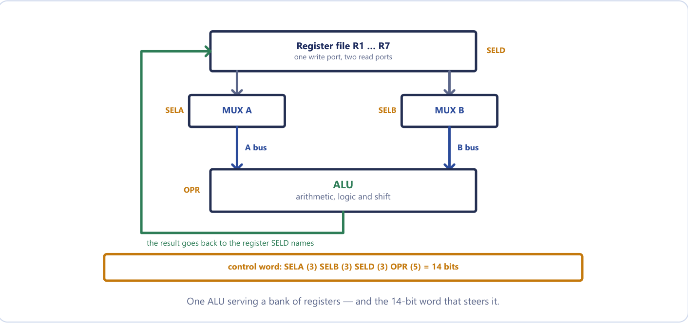
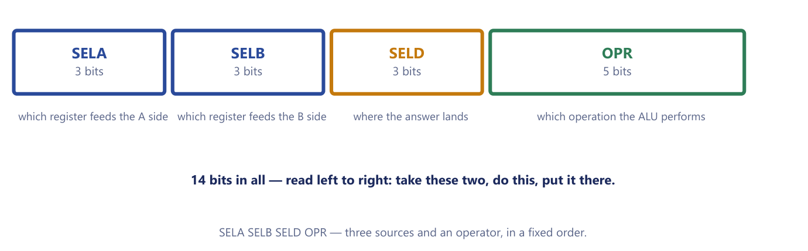
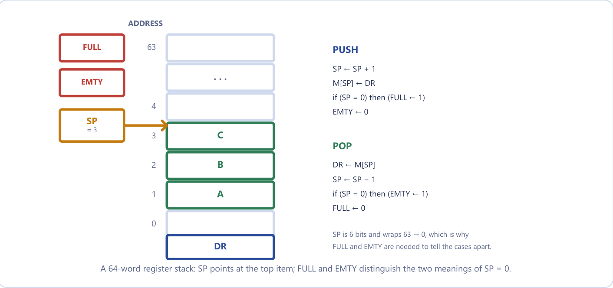
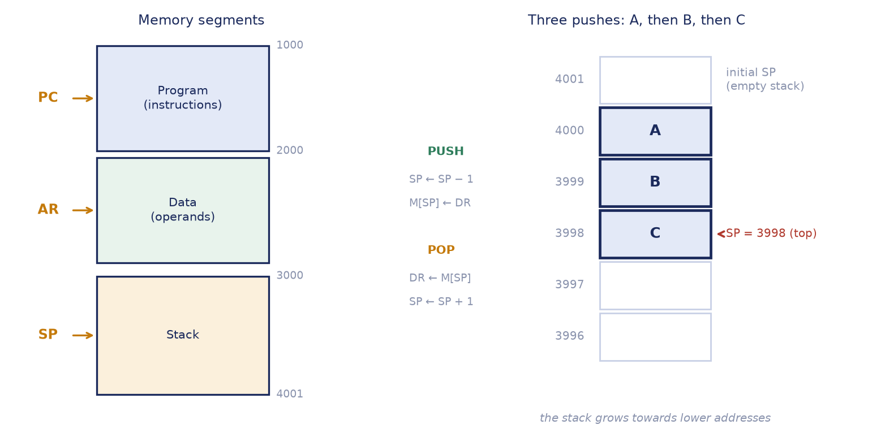

Chapter 14: General Register Organization and Stacks¶
One shared ALU, a bank of registers, a fourteen-bit control word, and the last-in first-out store that makes expressions and subroutines possible
The basic computer of the previous unit was deliberately small. It had one working register, the accumulator, and every calculation had to pass through it. That is a good machine for learning how an instruction cycle works, but it is a poor machine for doing arithmetic quickly: each time the program needs a second intermediate value, the first one has to be parked in memory and fetched back later, and memory is much slower than a register. A real processor attacks this problem in three ways. It keeps a whole bank of general-purpose registers inside the CPU; it provides a stack, a store with a very simple access rule that suits subroutine calls and expression evaluation; and it chooses carefully how many operands an instruction names. This chapter deals with the first two ideas and with the instruction formats that go with them. The next chapter takes up addressing modes and the instruction set, and the two chapters after that compare the RISC and CISC philosophies and look at multicore processors and GPUs.
The chapter follows one thread. We first draw the register-bank datapath: seven registers, two multiplexers, one ALU and a decoder. We show that everything the datapath does in one clock pulse is described by a single fourteen-bit control word, and we learn the mechanical method for writing that word. We then turn to the stack, built first from registers and then from ordinary memory, and see how reverse Polish notation lets a stack evaluate any arithmetic expression in one left-to-right pass. Finally we compare instruction formats with three, two, one and zero addresses by writing the same programs in each.
What you will learn
- Draw the general register datapath and explain what the two multiplexers, the decoder and the ALU each contribute.
- Encode any register-to-register microoperation into the 14-bit control word SELA, SELB, SELD, OPR, and decode a control word back into a microoperation.
- Perform PUSH and POP on a register stack and on a memory stack, with correct SP, FULL and EMTY handling, and state which convention a question is using.
- Convert infix expressions to reverse Polish notation and evaluate them with a stack trace.
- Write the same program for three-, two-, one- and zero-address machines and compare the formats.
- Count the instructions available in a fixed-length format using an expanding opcode.
14.1 From one accumulator to many registers¶
The central processing unit has three parts. The register set stores operands, intermediate results, addresses and status while an instruction executes. The arithmetic logic unit (ALU) performs the arithmetic, logic and shift microoperations on data taken from the registers. The control unit supervises the transfer of information among the registers and tells the ALU which operation to perform. Together the registers, the ALU and the buses that join them form the datapath; the control unit supplies, at every clock pulse, the bits that steer it.
Consider what one accumulator costs. To compute X = (A + B) × (C + D) the basic computer must load A, add B, and then store the partial result in a temporary memory word T, because it needs the accumulator for C + D. Only after that can it load C, add D, multiply by the saved value and store X. Seven instructions, four of which touch memory only because there was nowhere else to put a number. With a bank of registers the same work becomes
R1 ← R2 + R3
R4 ← R5 + R6
R7 ← R1 × R4
and the partial results never leave the processor. Memory is touched only for values that genuinely live there. A register is also much faster than main memory: a register-to-register microoperation takes one clock pulse, while a memory access takes many. Keeping the working set on the bench beside you, rather than fetching every tool from the store room, is the single biggest reason a modern CPU is fast, and it is why the RISC designs of Chapter 16 insist on having many registers.
| Single accumulator | General registers | |
|---|---|---|
| Intermediate results | must be stored in memory | stay in registers |
| Instruction length | short (one address) | register fields are only 3 to 5 bits, so still short |
| Speed | limited by memory access | register to register, one clock pulse |
| Example | the basic computer of Unit 4 | IBM 360, ARM, x86, every modern CPU |
There is a design problem, however. If seven registers must all be able to supply an ALU and receive its result, do we connect each register to every other with its own dedicated path? The number of paths grows as the square of the number of registers: seven people who each want a private telephone line to every other person need 21 lines, and a hundred people need nearly five thousand. The sensible answer is to share one meeting room, the ALU, reached by two corridors, the A bus and the B bus, and to let a receptionist, the control word, decide who walks down each corridor and what they do in the room. Sharing turns an exploding wiring problem into a small, cheap and reusable datapath, and this is the whole reason register files exist.
14.2 The register-bank datapath¶
The general register organization is a CPU organization in which a set of general-purpose registers is connected through two common buses, A and B, to a shared ALU, whose output is returned to a selected destination register through a decoder. In the course text's example there are seven registers, R1 to R7. Figure 14.1 shows the arrangement.

Read the figure from top to bottom. The output of every register in the register file goes to two multiplexers, MUX A and MUX B. A multiplexer is a selector: it has n inputs, one output, and a select code that decides which input gets through. MUX A, driven by the selector SELA, chooses which register's contents appear on the A bus, the first ALU input. MUX B, driven by SELB, chooses the register for the B bus, the second ALU input. The ALU performs the operation named by the code OPR (arithmetic, logic or shift) and produces its result on the output bus. That output travels back to the inputs of all the registers, but only one of them is told to accept it: a 3 × 8 decoder, driven by the selector SELD, activates the load input of exactly one register, and that register latches the ALU result at the next clock edge. The external input can be selected in place of a register by code 000 on SELA or SELB, and the ALU result is always visible on the output lines as the CPU's output data. The ALU also sets the status bits that we meet in Chapter 15.
Two multiplexers are enough to let any register reach either side of the ALU without wiring every register to every other. The decoder is needed on the destination side for the opposite reason: a source selector must pick one of many values and pass it on, while a destination selector must pick one of many registers and let only that one load. Selecting is the job of a multiplexer; enabling is the job of a decoder.
One consequence deserves attention. All of this happens within a single clock cycle. SELA puts a register on the A bus, SELB puts one on the B bus, OPR tells the ALU what to compute and SELD picks the register that latches the result, and all four happen in the same cycle. This is possible because registers are edge-triggered: during the cycle the old values are read out onto the buses and ripple through the ALU, and only at the end of the cycle, at the clock edge, is the result latched. Reading and writing are separated in time by the clock, so a register may safely be both a source and the destination of the same microoperation. The basic computer of Unit 4 had one common bus and no register file; here there are two buses and seven registers, the same idea widened.
14.3 The control word¶
The datapath is governed by a control word of 14 bits, divided into four fields: three 3-bit selectors, SELA, SELB and SELD, and one 5-bit operation field OPR. Whatever value the control unit places in these fourteen bits, that single microoperation happens at the next clock edge.

Figure 14.2 shows the four fields. Read left to right they say: take these two, do this, put it there. SELA names the register that feeds the A side, SELB the register that feeds the B side, SELD the register that receives the answer, and OPR the operation the ALU performs. The three selection fields use the same code, which is simply the register number in binary.
Register selection codes (Table 14.1)
| Binary | SELA | SELB | SELD |
|---|---|---|---|
000 |
Input | Input | None |
001 |
R1 | R1 | R1 |
010 |
R2 | R2 | R2 |
011 |
R3 | R3 | R3 |
100 |
R4 | R4 | R4 |
101 |
R5 | R5 | R5 |
110 |
R6 | R6 | R6 |
111 |
R7 | R7 | R7 |
The code 000 is not a register called R0. On the source side it selects the external input; on the destination side it means no destination: nothing is loaded and the result simply appears on the output lines. A microoperation that should discard its result (for example one run only for its effect on the status bits) uses SELD = 000. Students sometimes lose a mark by writing an operand into "R0"; the seven registers are R1 to R7, encoded 001 to 111.
The ALU operations are encoded in the 5-bit OPR field. The course uses the following sample encoding.
ALU operation codes (Table 14.2)
| OPR | Microoperation | Symbol |
|---|---|---|
00000 |
Transfer A | TSFA |
00001 |
Increment A | INCA |
00010 |
A + B | ADD |
00101 |
A − B | SUB |
00110 |
Decrement A | DECA |
01000 |
A AND B | AND |
01010 |
A OR B | OR |
01100 |
A XOR B | XOR |
01110 |
Complement A | COMA |
10000 |
Shift right A | SHRA |
11000 |
Shift left A | SHLA |
Notice that the table says nothing about clear. There is no OPR code for it and none is needed: XOR of a register with itself gives zero, because \(x \oplus x = 0\). Notice also which operations use both inputs (ADD, SUB, AND, OR, XOR) and which use only A (transfer, increment, decrement, complement, shifts). A unary operation ignores the B bus, so SELB is a don't care for it, and by convention it is written 000.
Use the codes the question supplies
The OPR codes of Table 14.2 follow the course text's sample encoding, but a question may give its own table (for example ADD = 10010, OR = 01011, or ADD = 00011). Use the codes you are given. Only the order of the fields and the register selection codes stay fixed.
14.4 From microoperation to control word¶
Encoding a microoperation is a purely mechanical translation, and it is by far the most frequently examined item in this unit. The method never changes.
- Write the microoperation out as
Rd ← Ra op Rb. - SELA is the binary code of
Ra. - SELB is the binary code of
Rb. - SELD is the binary code of
Rd; OPR is the code foropfrom the table in use.
Then assemble the four fields in the fixed order SELA, SELB, SELD, OPR and check that you have 3 + 3 + 3 + 5 = 14 bits. The word is "take what is in Ra, take what is in Rb, apply op, put the answer in Rd", written in binary, one field per blank on an order form.
The classic slip
Writing the fields in the wrong order. The microoperation reads destination first (R1 ← R2 − R3) but the control word reads sources first, destination third: SELA, SELB, SELD, OPR. Fix it in memory with one sentence: A and B are the two you take, D is the one you put it in, and A and B come first.
Example 14.1: The control word for R2 ← R4 + R3
Problem. In a general register organization a 14-bit control word has fields SELA, SELB, SELD (3 bits each) and OPR (5 bits). Show how to implement the microoperation R2 ← R4 + R3, given that the OPR code for addition is 00011.
Working.
- Destination is R2, first source is R4, second source is R3.
- Register codes: R4 =
100, R3 =011, R2 =010. - Assemble in the fixed order: SELA =
100(R4), SELB =011(R3), SELD =010(R2), OPR =00011(ADD).
Answer. The control word is 100 011 010 00011, that is 10001101000011, and 3 + 3 + 3 + 5 = 14 bits. Writing 010 100 011 00011 (destination first) would be the commonest lost mark in the unit.
Example 14.2: Two control words with a supplied OPR table
Problem. Assume the OPR codes are 00000 = transfer, 01011 = OR, 10010 = ADD, 10100 = complement. Give the control words for (i) R1 ← R2 + R3 and (ii) R1 ← R2 ∨ R3.
Working. The registers are the same in both: SELA = R2 = 010, SELB = R3 = 011, SELD = R1 = 001. Only the OPR field changes.
Answer. (i) 010 011 001 10010. (ii) 010 011 001 01011.
The two words differ only in OPR. That is the whole idea of a general register organization: the datapath is fixed and the control word reconfigures it, so one piece of hardware performs every operation in the instruction set.
Example 14.3: Reading a control word backwards
Problem. A control word is 101 010 111 10010, and 10010 is ADD. State the microoperation.
Working. Cut the word into 3, 3, 3 and 5 bits: 101, 010, 111, 10010. SELA = 101 = R5, SELB = 010 = R2, SELD = 111 = R7, OPR = ADD. The destination is the third field, so the microoperation is destination ← A op B.
Answer. R7 ← R5 + R2. The common error is to read the fields destination first and answer R5 ← R2 + R7.
The method works equally well for the eight microoperations that the course text tabulates for this CPU.
Example 14.4: A table of control words, and two special rows
Problem. Using Tables 14.1 and 14.2, give the control word for each microoperation.
Working and answer.
| Microoperation | SELA | SELB | SELD | OPR | Control word |
|---|---|---|---|---|---|
R1 ← R2 − R3 |
R2 | R3 | R1 | SUB | 010 011 001 00101 |
R4 ← R4 ∨ R5 |
R4 | R5 | R4 | OR | 100 101 100 01010 |
R6 ← R6 + 1 |
R6 | — | R6 | INCA | 110 000 110 00001 |
R7 ← R1 |
R1 | — | R7 | TSFA | 001 000 111 00000 |
Output ← R2 |
R2 | — | None | TSFA | 010 000 000 00000 |
Output ← Input |
Input | — | None | TSFA | 000 000 000 00000 |
R4 ← shl R4 |
R4 | — | R4 | SHLA | 100 000 100 11000 |
R5 ← 0 |
R5 | R5 | R5 | XOR | 101 101 101 01100 |
Two rows deserve a second look. Output ← Input is the all-zeros control word: the external input goes through the multiplexer, through the ALU untouched (transfer A), and out, into no register, a pure pass-through. R5 ← 0 clears a register by XOR-ing it with itself, since there is no clear operation in the table. A dash in the SELB column means that the operation uses only the A input.
Example 14.5: Doubling a register, and why the same register may sit on both buses
Problem. Encode R3 ← R3 + R3, and explain why it is safe even though R3 is both source and destination. Also say what is wrong with the control word 001 000 110 00010, written by a student to double R1 into R6 with the argument "ADD only needs one source, so SELB can be 000".
Working. For the first part: SELA = SELB = SELD = R3 = 011 and OPR = ADD = 00010, giving 011 011 011 00010. It is safe because the register is edge-triggered: R3's old value is read onto both the A and B buses during the cycle, the ALU adds them, and only at the clock edge is the sum latched back into R3. The read and the write are separated in time, so there is no race.
For the second part: ADD uses both ALU inputs, so SELB is not a don't care. With SELB = 000 the CPU would compute R1 + (external input), not R1 + R1. To double R1 into R6, select R1 on both buses.
Answer. 011 011 011 00010 for the first; the corrected word for the student is 001 001 110 00010. A don't-care SELB is valid only for single-operand operations such as complement, increment, decrement, transfer or shift.
How many different microoperations?
The form Rd ← Ra + Rb can be written with any of 7 sources for A, any of 7 for B and any of 7 destinations, so this CPU can express 7 × 7 × 7 = 343 different register-to-register additions, and the same number for each other two-input operation.
14.5 Stack organization¶
A stack is a storage device that stores information in such a manner that the item stored last is the first item retrieved. It is a last-in first-out (LIFO) list. Only the top of the stack is accessible. The register that holds the address of the top is the stack pointer (SP). Insertion of an item is called push and deletion is called pop; the standard picture is a pile of canteen trays, to which you add on top and from which you take the top one. Nothing is physically moved: pushing and popping change SP, and the data stays where it was written.
The restriction, that you may not reach into the middle, is the whole point. It makes the hardware very cheap, because the only address you ever need is the address of the top, and it happens to be exactly the discipline that function calls and expression evaluation require. Stacks are used for four jobs.
- Subroutine calls and returns. If f calls g, which calls h, the return addresses pile up, and as each routine finishes the most recent one is popped first. The stack unwinds the calls in perfect reverse order, which is what lets calls nest and lets a subroutine call itself.
- Expression evaluation, in one pass, with no brackets and no precedence rules (Section 14.8).
- Saving the processor state during an interrupt without reserving a fixed place for it.
- Passing parameters to procedures and holding local data.
A pop does not erase anything. It reads the top word and moves SP; the old value stays in its cell until something is pushed over it. That is why a stack looks "dirty" in a memory dump, and why leftover data on a stack can be a security concern. A stack machine, one whose arithmetic instructions take their operands from the stack, uses zero-address instructions: ADD pops two items, adds them and pushes the sum.
There are two ways to build a stack, and they differ in where the words live. A register stack is a small bank of registers with a stack pointer. It is fast but small and of fixed size, so it needs flags to report FULL and EMPTY. A memory stack is a region of ordinary memory with SP pointing at the top. It is effectively unlimited and is what real machines use, at the price of a memory access for every push and pop.
14.6 The register stack¶
Figure 14.3 shows the course text's 64-word register stack. SP is a 6-bit register, because \(2^6 = 64\), and holds the address of the top item. Two 1-bit flip-flops record the state of the stack: FULL is 1 when the stack is full and EMTY is 1 when it is empty. DR is the data register that exchanges words with the stack.

The initial state is SP = 0, EMTY = 1, FULL = 0. The operations are
PUSH (allowed only if FULL = 0):
SP ← SP + 1
M[SP] ← DR
if (SP = 0) then (FULL ← 1)
EMTY ← 0
POP (allowed only if EMTY = 0):
DR ← M[SP]
SP ← SP - 1
if (SP = 0) then (EMTY ← 1)
FULL ← 0
Note the order of the first two lines of each operation, because it is different for push and pop, and that difference is what the examiner checks. A push moves the pointer first and then writes; otherwise it would overwrite the item already on top. A pop reads first and then gives the room back by moving the pointer. The first item is stored at address 1: the first push makes SP = 1 and writes into location 1.
The flags are needed because SP is only six bits wide and wraps around. Incrementing 63 (111111) gives 1 000000, and only the low six bits are kept, so SP becomes 0. The design uses this wrap-around as the "full" signal: when a push makes SP return to 0, the 64th word has just been written and the stack is FULL. On the other hand, a pop that leaves SP = 0 has just removed the last item, so the stack is EMPTY. The value SP = 0 therefore has two meanings, and FULL and EMTY tell them apart. The two flags can never both be 1: every push clears EMTY and every pop clears FULL.
Pushing when FULL = 1 would overwrite the oldest item, and popping when EMTY = 1 would return rubbish; these are stack overflow and stack underflow. A real register stack checks the flags before acting.
Example 14.6: How many items are in the stack, and a short trace
Problem. (a) In the 64-word register stack let SP = 000000. How many items are in the stack if (i) FULL = 1 and EMTY = 0, and (ii) FULL = 0 and EMTY = 1? (b) The stack starts with SP = 0, EMTY = 1, FULL = 0. Trace PUSH A, PUSH B, PUSH C, POP, and then PUSH D.
Working. (a)(i) SP wrapped from 63 back to 0 on a push, and FULL was set: every word holds an item, so the stack contains 64 items. (ii) SP was decremented to 0 by pops and EMTY was set: nothing is left, so 0 items.
(b) Apply the micro-operations step by step.
| Operation | SP | Top word M[SP] | EMTY | FULL |
|---|---|---|---|---|
| start | 0 | — | 1 | 0 |
| PUSH A | 1 | A | 0 | 0 |
| PUSH B | 2 | B | 0 | 0 |
| PUSH C | 3 | C | 0 | 0 |
| POP (returns C) | 2 | B | 0 | 0 |
| PUSH D | 3 | D (C overwritten) | 0 | 0 |
Answer. (a) 64 items; 0 items. (b) The POP returned C (last in, first out). At the end SP = 3, the top is D, and the stack holds A, B, D. The overwriting of C is exactly right: it had been popped.
14.7 The memory stack¶
A stack does not need dedicated registers. A portion of main memory can be assigned to it, with a processor register acting as the stack pointer. In the course text's layout, memory is partitioned into a program segment (addressed by PC), a data segment (addressed by AR) and a stack segment (addressed by SP). The stack segment occupies locations 3000 to 4001, and it grows towards lower addresses; Figure 14.4 shows the layout and a stack of three items.

In this convention SP initially holds 4001, the address just beyond the last word of the segment, and each push first decrements it, so that the first item goes into location 4000. The operations are
PUSH: SP ← SP - 1
M[SP] ← DR
POP: DR ← M[SP]
SP ← SP + 1
Overflow and underflow are detected not by flags but by two limit registers. After a push, SP is compared with the upper limit, 3000; after a pop it is compared with the lower limit, 4001. The basic hardware provides no such check on its own, which is why the comparison with the limit registers is needed.
Read the convention before you answer
Two things vary between books and questions, and both change the micro-operations: which way the stack grows, and whether SP points at the top item or at the next free slot.
| Convention | Push | Pop |
|---|---|---|
| Register stack, grows up, SP at the top item | SP ← SP + 1; M[SP] ← DR |
DR ← M[SP]; SP ← SP − 1 |
| Memory stack, grows down, SP at the top item | SP ← SP − 1; M[SP] ← DR |
DR ← M[SP]; SP ← SP + 1 |
| Memory stack, grows down, SP at the next free slot | M[SP] ← DR; SP ← SP − 1 |
SP ← SP + 1; DR ← M[SP] |
The third row is why the two lines swap order: when SP points at free space instead of at the top item, a push must write first and then move, and a pop must move first and then read. Always state the growth direction and the meaning of SP before writing the micro-operations.
Why do real machines grow the stack downwards? On x86, ARM and almost every modern machine the stack grows towards lower addresses, and a push decrements SP. The reason is a space-sharing trick: the program's heap grows upwards from low memory while the stack grows downwards from high memory, so the two share one region and collide only if the program genuinely runs out of space. That collision is the stack overflow that gave a well-known programming website its name.
Example 14.7: A stack traced by hand
Problem. A memory stack has SP = 3000 and the stack grows upwards (towards higher addresses), with SP pointing at the top item. Show SP and the stack after PUSH 25, PUSH 40, POP, PUSH 60, POP, POP.
Working. Push: SP ← SP + 1 then M[SP] ← DR. Pop: DR ← M[SP] then SP ← SP − 1.
PUSH 25 SP ← 3001, M[3001] ← 25 stack [25]
PUSH 40 SP ← 3002, M[3002] ← 40 stack [25, 40]
POP DR ← M[3002] = 40, SP ← 3001 stack [25]
PUSH 60 SP ← 3002, M[3002] ← 60 stack [25, 60] (40 overwritten)
POP DR ← 60, SP ← 3001 stack [25]
POP DR ← 25, SP ← 3000 stack empty
Answer. The three pops return 40, 60 and 25, and the final SP is 3000 with the stack empty. A common mistake is to write M[SP] ← DR before SP ← SP + 1 on a push, which overwrites the item currently on top and loses it.
Example 14.8: Counting items in the downward stack
Problem. A memory stack grows downwards from 4001 with SP pointing at the top item. Initially SP = 4001. (a) Write the first three pushes and give SP. (b) If SP = 3998, how many items are on the stack, and where was the first item stored?
Working. (a) The first push: SP ← 4000; M[4000] ← DR. The second: SP ← 3999; M[3999] ← DR. The third: SP ← 3998; M[3998] ← DR, so SP = 3998. (b) The first item went to 4000, and 4000, 3999 and 3998 are occupied, so there are 3 items.
Answer. SP = 3998 after three pushes; 3 items, the first stored at location 4000.
14.8 Reverse Polish notation¶
Ordinary algebra writes the operator between its operands: A + B. This is infix notation. A machine cannot evaluate infix in one left-to-right pass, because it has to honour parentheses and precedence, and on reading A + it still does not know what is being added. The Polish logician Łukasiewicz showed that putting the operator before its operands (prefix, + A B) or after them (postfix, or reverse Polish notation, RPN, A B +) removes the need for parentheses altogether. The order of the symbols already encodes the order of operations, so there is exactly one way to read an expression and no bracket in sight.
| Infix | Prefix (Polish) | Postfix (reverse Polish) |
|---|---|---|
A + B |
+ A B |
A B + |
A * B + C * D |
+ * A B * C D |
A B * C D * + |
(A + B) * C |
* + A B C |
A B + C * |
Read A B + aloud as instructions: get A, get B, now add. Every symbol is an action you can perform the moment you reach it, using only what you have already collected. That is precisely a stack: operands pile up, and an operator consumes the top two. Scientific calculators convert what you type into RPN internally, and so do compilers: an expression tree walked in postorder is reverse Polish notation.
Converting infix to RPN¶
Work outwards from the innermost parentheses, honouring the normal precedence (multiplication and division before addition and subtraction; equal precedence associates left to right). Each time you resolve a sub-expression, write its operator after its two operands; its RPN string then counts as a single operand for the next level. When no brackets are given you must supply the precedence yourself, by putting the brackets in first: A + B * C - D / E means (A + (B * C)) - (D / E).
Convert with precedence, not left to right
In A + B * C the multiplication binds first, so the RPN is A B C * +, not A B + C *. Writing A B + C * converts (A + B) * C, a different expression.
A quick check: an expression with n operands has n − 1 binary operators, and, scanning left to right, the number of operands seen so far must never fall below what the operators need. If a conversion breaks either rule it is wrong.
Example 14.9: Infix to reverse Polish notation
Problem. Convert to RPN: (a) A * B + C * D + E * F; (b) A + B * C - D / E; (c) (A + B) * [C * (D + E) + F]; (d) A * [B + C * (D + E)] / [F * (G + H)].
Working.
(a) Products first: A B *, C D *, E F *. Then add left to right: A B * C D * +, then ... E F * +.
(b) Bracketed: (A + (B * C)) - (D / E). B * C → B C *; A + that → A B C * +; D / E → D E /; then the minus goes at the end.
(c) Innermost first: (A + B) → A B +; (D + E) → D E +; C * (D + E) → C D E + *; + F → C D E + * F +; finally the outer * joins the two halves.
(d) D + E → D E +; C * (...) → C D E + *; B + ... → B C D E + * +; A * [...] → A B C D E + * + *; G + H → G H +; F * (...) → F G H + *; finally divide.
Answer.
(a) A B * C D * + E F * +
(b) A B C * + D E / -
(c) A B + C D E + * F + *
(d) A B C D E + * + * F G H + * /
Evaluating RPN with a stack¶
Scan the expression left to right. If the symbol is an operand, push it. If it is an operator, pop the top two items, apply the operator, and push the result. When the scan ends, exactly one value is left on the stack: the answer. For the non-commutative operators there is one detail to get right. In A B - the value pushed first, A, is the left operand and the result is A − B. Since the stack gives you B first, the rule is: the item popped second is the left operand. So 8 2 - is 6, not −6.
Example 14.10: Evaluating RPN with a stack trace
Problem. Evaluate (a) 3 4 * 5 6 * + (the postfix form of (3 × 4) + (5 × 6)) and (b) 15 7 - 2 /, showing the stack after every token.
Working. The top of the stack is at the right.
(a)
| Token | Action | Stack |
|---|---|---|
| 3 | push | 3 |
| 4 | push | 3, 4 |
* |
pop 4 and 3, push 12 | 12 |
| 5 | push | 12, 5 |
| 6 | push | 12, 5, 6 |
* |
pop 6 and 5, push 30 | 12, 30 |
+ |
pop 30 and 12, push 42 | 42 |
(b)
| Token | Action | Stack |
|---|---|---|
| 15 | push | 15 |
| 7 | push | 15, 7 |
- |
pop 7 (right), pop 15 (left); 15 − 7 = 8 | 8 |
| 2 | push | 8, 2 |
/ |
pop 2 (right), pop 8 (left); 8 ÷ 2 = 4 | 4 |
Answer. (a) 42. (b) 4, which agrees with the infix check \((15 - 7)/2 = 4\). Had the operands been swapped at the minus, the result would have been \(7 - 15 = -8\) and the division nonsense.
Example 14.11: A longer conversion and evaluation
Problem. Convert \((3 + 4)\,[\,10\,(2 + 6) + 8\,]\) to RPN and evaluate it on a stack.
Working. Work outwards. \(3 + 4\) becomes 3 4 + and \(2 + 6\) becomes 2 6 +; multiplying that by 10 gives 2 6 + 10 *; adding 8 gives 2 6 + 10 * 8 +; the outer product then joins the two halves. The RPN is
3 4 + 2 6 + 10 * 8 + *
Trace (top of stack at the right):
| Token | Action | Stack |
|---|---|---|
| 3, 4 | push both | 3, 4 |
+ |
3 + 4 | 7 |
| 2, 6 | push both | 7, 2, 6 |
+ |
2 + 6 | 7, 8 |
| 10 | push | 7, 8, 10 |
* |
8 × 10 | 7, 80 |
| 8 | push | 7, 80, 8 |
+ |
80 + 8 | 7, 88 |
* |
7 × 88 | 616 |
Answer. 616. Check: \((3+4) imes (10 imes 8 + 8) = 7 imes 88 = 616\). The stack is empty but for the answer, which is the check that the expression was well formed.
Two further checks round out the picture. First, the expression A * (B + C) - D / (E + F) converts to A B C + * D E F + / -; with A = 6, B = 2, C = 3, D = 12, E = 1, F = 2 the trace is: push 6, 2, 3 (stack 6, 2, 3); + gives 6, 5; * gives 30; push 12, 1, 2 gives 30, 12, 1, 2; + gives 30, 12, 3; / gives 30, 4; - gives 26. At the division the stack holds 12 below 3, so the division is 12 ÷ 3 and not 3 ÷ 12. Second, the order of symbols carries the whole meaning: 8 2 / 3 - is \((8/2) - 3 = 1\), whereas 8 2 3 - / is \(8/(2-3) = -8\). Moving one operator changes the expression completely.
14.9 Instruction formats: three, two, one and zero addresses¶
An instruction format is the layout of the bits of an instruction. The most common fields are an operation code (opcode), a mode field that says how to find the operand, and one or more address fields, each holding a memory address or a register number. How many address fields an instruction has depends on the internal organization of the CPU.
| Organization | Typical instruction | Address fields |
|---|---|---|
| Single accumulator | ADD X |
1 (AC is implied) |
| General register | ADD R1, R2, R3 |
2 or 3 |
| Stack | ADD |
0 (the top two items are implied) |
The best way to compare the formats is to write the same program in each. The course text does this with X = (A + B) × (C + D), where A, B, C, D and X are memory words, R1 and R2 are registers, T is a temporary memory word and TOS is the top of the stack.
Example 14.12: X = (A + B) × (C + D) in all four formats
Problem. Write programs to evaluate X = (A + B) × (C + D) for a three-address, a two-address, a one-address and a zero-address machine.
Working and answer.
Three-address (3 instructions):
ADD R1, A, B R1 ← M[A] + M[B]
ADD R2, C, D R2 ← M[C] + M[D]
MUL X, R1, R2 M[X] ← R1 × R2
Two-address (6 instructions). The destination is always one of the two named operands, so a MOV is needed first to avoid destroying a memory word.
MOV R1, A R1 ← M[A]
ADD R1, B R1 ← R1 + M[B]
MOV R2, C R2 ← M[C]
ADD R2, D R2 ← R2 + M[D]
MUL R1, R2 R1 ← R1 × R2
MOV X, R1 M[X] ← R1
One-address (7 instructions). There is one accumulator, so the temporary T exists only because there is nowhere else to park the first sum.
LOAD A AC ← M[A]
ADD B AC ← AC + M[B]
STORE T M[T] ← AC
LOAD C AC ← M[C]
ADD D AC ← AC + M[D]
MUL T AC ← AC × M[T]
STORE X M[X] ← AC
Zero-address (8 instructions). This is just the postfix expression A B + C D + * with PUSH written in front of the operands and a POP to store the answer.
PUSH A TOS ← A
PUSH B TOS ← B
ADD TOS ← (A + B)
PUSH C TOS ← C
PUSH D TOS ← D
ADD TOS ← (C + D)
MUL TOS ← (C + D) × (A + B)
POP X M[X] ← TOS
The program lengths are 3, 6, 7 and 8: the programs get longer as the instructions get shorter.
The trade-off is summarised in the table below. More addresses per instruction mean shorter programs but longer instructions; fewer addresses mean longer programs but shorter, more regular instructions, which are easier to pipeline. That single trade-off is the RISC and CISC argument in miniature.
| Format | Advantage | Disadvantage |
|---|---|---|
| Three-address | shortest programs | longest instructions (three addresses to encode) |
| Two-address | the most common in commercial computers | one operand is overwritten by the result |
| One-address | short instructions; simple hardware | long programs; temporaries go to memory |
| Zero-address | shortest instructions; expressions map directly from RPN | longest programs; PUSH and POP still need an address |
A RISC machine uses a restricted form of the three-address format in which only LOAD and STORE touch memory and every other instruction is register to register; Chapter 16 returns to this.
Example 14.13: X = (A − B) × (C + D × E) in four formats
Problem. Write programs for X = (A - B) × (C + D × E) with the instructions ADD, SUB, MUL, MOV, LOAD, STORE, PUSH, POP.
Working and answer. The RPN is A B - C D E * + *.
Three-address (4 instructions):
SUB R1, A, B
MUL R2, D, E
ADD R2, C, R2
MUL X, R1, R2
Two-address (7 instructions):
MOV R1, A
SUB R1, B
MOV R2, D
MUL R2, E
ADD R2, C
MUL R1, R2
MOV X, R1
One-address (8 instructions). Computing A - B first loses it when C + D × E is loaded, so do the bracket that needs a temporary first.
LOAD D
MUL E
ADD C
STORE T
LOAD A
SUB B
MUL T
STORE X
Zero-address (10 instructions), following the RPN:
PUSH A PUSH B SUB
PUSH C PUSH D PUSH E MUL ADD
MUL
POP X
The counts are 4, 7, 8 and 10. In zero-address code SUB pops B then A and pushes A − B. Counting the stack after every instruction: A and B bring it to 2 items, the SUB reduces it to 1, the three pushes of C, D and E raise it to 4, and the MUL, ADD and final MUL bring it down to 1 again. The deepest the stack gets is 4 items.
Counting instructions: the expanding opcode¶
If an instruction has n bits and the address (and mode) fields use a of them, the opcode has n − a bits and there can be \(2^{n-a}\) instructions. When the instruction set mixes formats, an expanding opcode reuses an unused opcode value as an escape: the bits of the missing address field become extra opcode bits, exactly as the opcode 111 did in the basic computer.
Example 14.14: How many one-address and zero-address instructions?
Problem. A computer has 16-bit instructions and 6-bit addresses. There are 14 two-address instructions. How many one-address instructions can be formulated, and how many zero-address instructions if there are 100 one-address instructions?
Working. Two-address. The two addresses take 2 × 6 = 12 bits, so the opcode is 4 bits: 16 codes, of which 14 are used, leaving 2 as escapes.
One-address. Each escape code extends the opcode by the 6 bits freed by the missing address: 2 × \(2^6\) = 128 possible codes.
Zero-address. With 100 of the 128 used, 28 remain; each gains another 6 bits: 28 × \(2^6\) = 1792.
Answer. At most 128 one-address instructions; with 100 of them, 1792 zero-address instructions.
14.10 Summary¶
Key points
- A CPU is a register set, an ALU and a control unit. A bank of general registers keeps intermediate results inside the processor, where each register-to-register microoperation takes one clock pulse.
- In the general register organization two multiplexers (selectors SELA and SELB) put two registers on the A and B buses, the ALU (operation OPR) computes, and a 3 × 8 decoder (selector SELD) loads the result into one register at the clock edge.
- The control word is SELA (3) | SELB (3) | SELD (3) | OPR (5) = 14 bits. Code
000means external input on the source side and no destination on the SELD side. Clear a register by XOR-ing it with itself. A unary operation leaves SELB =000. Sources come first, destination third. - A stack is a LIFO store with a stack pointer. A register stack uses FULL and EMTY flags because SP wraps from 63 to 0; a memory stack uses limit registers and, by convention, grows towards lower addresses, so that a push decrements SP.
- Reverse Polish notation needs no parentheses. Operands are pushed; an operator pops two items and pushes one, and the item popped second is the left operand.
- Three-address programs are shortest, zero-address instructions are shortest; one-address machines use an accumulator and temporaries; a RISC machine uses LOAD and STORE only. An expanding opcode reuses escape codes: each gains the freed address bits.
| Topic | Rule to remember |
|---|---|
| Control word | SELA 3 | SELB 3 | SELD 3 | OPR 5 = 14 bits; read as "take A, take B, put in D, do OPR" |
| Register codes | 000 input/none; 001 to 111 = R1 to R7 |
| Register stack push | SP ← SP + 1; M[SP] ← DR; if SP = 0 then FULL ← 1; EMTY ← 0 |
| Register stack pop | DR ← M[SP]; SP ← SP − 1; if SP = 0 then EMTY ← 1; FULL ← 0 |
| Memory stack (grows down) | push: SP ← SP − 1; M[SP] ← DR; pop: DR ← M[SP]; SP ← SP + 1 |
| RPN evaluation | operand: push; operator: pop two, apply (second popped is left), push result |
| Formats | 3-address shortest programs; 2-address most common; 1-address uses AC; 0-address = stack |
| Expanding opcode | each unused code gains the freed address bits |
14.11 Exercises¶
Exercise 14.1. Give the 14-bit control word for each microoperation, using Table 14.2: (a) R3 ← R1 + R2; (b) R5 ← R4 − R6; (c) R7 ← R2' (complement of R2).
Answer
(a) SELA = R1 = 001, SELB = R2 = 010, SELD = R3 = 011, ADD = 00010: 001 010 011 00010.
(b) SELA = R4 = 100, SELB = R6 = 110, SELD = R5 = 101, SUB = 00101: 100 110 101 00101.
(c) Complement is unary, so SELB = 000: SELA = R2 = 010, SELD = R7 = 111, COMA = 01110: 010 000 111 01110.
Exercise 14.2. A control word reads 011 101 010 00010. Identify SELA, SELB, SELD and OPR and write the microoperation it performs.
Answer
Split 3-3-3-5: SELA = 011 = R3, SELB = 101 = R5, SELD = 010 = R2, OPR = 00010 = ADD. The microoperation is R2 ← R3 + R5.
Exercise 14.3. Give the control words for (a) R3 ← R1 - R6 with SUB = 10110; (b) R4 ← R4' with COM = 10100; and say which field is unused in (b) and what you would put in it.
Answer
(a) SELA = R1 = 001, SELB = R6 = 110, SELD = R3 = 011: 001 110 011 10110.
(b) Complement uses only the A input: SELA = R4 = 100, SELD = R4 = 100, OPR = 10100: 100 000 100 10100. SELB is unused; write the "none" code 000 and say so.
Exercise 14.4. (Spot the error) A student writes the control word 001 000 110 00010 for R6 ← R1 + R1, arguing "the ADD only needs one source register, so SELB = 000". Identify the bug, say what the CPU would compute, and give the corrected word.
Answer
ADD uses both ALU inputs, so SELB cannot be a don't care. With SELB = 000 the CPU computes R1 + (external input) and stores it in R6. To double R1, select R1 on both buses: 001 001 110 00010. A don't-care SELB is valid only for single-operand operations such as complement, increment or shift.
Exercise 14.5. What microoperation does the control word 110 110 110 01100 perform? How many microoperations of the form Rd ← Ra + Rb can this CPU express?
Answer
SELA = SELB = SELD = R6 and OPR = XOR, so R6 ← R6 ⊕ R6 = 0: it clears R6. The additions can use any of 7 sources for A, 7 for B and 7 destinations: 7 × 7 × 7 = 343.
Exercise 14.6. (Explain why) A register file connected to a single ALU through two buses is preferred to point-to-point connections between all registers. Give the wiring-cost reason, and explain why the destination side needs a decoder while the source side needs multiplexers.
Answer
With dedicated paths between every pair of registers the number of connections grows with the square of the register count (for seven registers, 21 pairs; for 100 registers nearly 5000), whereas a shared bus system needs only two multiplexers, one ALU and one decoder. On the source side one value out of many must be selected and passed on, which is the job of a multiplexer. On the destination side one register out of many must be enabled to load while all the others hold, which is the job of a decoder.
Exercise 14.7. A 64-word register stack starts empty (SP = 0). Trace PUSH 10, PUSH 20, PUSH 30, POP, PUSH 40. After each step give SP, the top of stack and EMTY. What did the POP return?
Answer
| Step | SP | Top | EMTY |
|---|---|---|---|
| PUSH 10 | 1 | 10 | 0 |
| PUSH 20 | 2 | 20 | 0 |
| PUSH 30 | 3 | 30 | 0 |
| POP | 2 | 20 | 0 |
| PUSH 40 | 3 | 40 | 0 |
The POP returned 30 (the last item pushed).
Exercise 14.8. In a 64-word register stack, SP = 000000. State the number of items if (a) FULL = 1 and (b) EMTY = 1. Why are two flags needed?
Answer
(a) 64 items: the 64th push made the 6-bit SP wrap from 63 to 0. (b) 0 items. SP = 0 has two meanings (full and empty) because SP wraps, and the flags tell them apart.
Exercise 14.9. A memory stack grows upwards with SP = 3000 pointing at the top item. Show SP and the stack after PUSH 25, PUSH 40, POP, PUSH 60, POP, POP.
Answer
After the pushes SP = 3001 then 3002 with stack [25, 40]; the POP returns 40 and SP = 3001; PUSH 60 gives SP = 3002 and [25, 60]; the next two pops return 60 and 25, leaving SP = 3000 with the stack empty.
Exercise 14.10. Convert to reverse Polish notation: (a) A * B + C; (b) (A + B) * (C - D); (c) A + B * C - D.
Answer
(a) A B * C +. (b) A B + C D - *. (c) A B C * + D -.
Exercise 14.11. Evaluate the RPN expression 5 6 + 2 * on a stack, showing the stack after each token, and give the equivalent infix expression. Then evaluate 9 3 - 4 *.
Answer
5 6 + 2 *: push 5, push 6 (stack 5, 6); + gives 11; push 2 (11, 2); * gives 22. Infix: \((5 + 6) \times 2 = 22\).
9 3 - 4 *: push 9, push 3; - pops 3 then 9 and gives 9 − 3 = 6; push 4; * gives 24. Infix: \((9 - 3) \times 4 = 24\).
Exercise 14.12. (Design) A pure stack machine has the instructions PUSH x, POP x, ADD, SUB, MUL (each binary operator pops the top two values and pushes the result). (a) Give the RPN form of X = (A + B) * (C - D). (b) Write the instructions that compute it and store the result in X. (c) State the maximum number of items on the stack at any moment.
Answer
(a) A B + C D - *. (b) PUSH A; PUSH B; ADD; PUSH C; PUSH D; SUB; MUL; POP X. (c) The maximum depth is 3, reached after PUSH D, when A + B, C and D are all on the stack.
Exercise 14.13. Evaluate A B C + * D E F + / - with A = 6, B = 2, C = 3, D = 12, E = 1, F = 2, showing the stack after every token. What is the infix expression?
Answer
Stack: 6; 6, 2; 6, 2, 3; + gives 6, 5; * gives 30; 30, 12; 30, 12, 1; 30, 12, 1, 2; + gives 30, 12, 3; / gives 30, 4; - gives 26. The infix is \(A \times (B + C) - D/(E + F) = 30 - 4 = 26\).
Exercise 14.14. Compare a register stack and a memory stack on: where each is stored, what SP is, how overflow and underflow are detected, and one advantage of each.
Answer
A register stack is a small bank of registers inside the CPU; SP is a counter (6 bits for 64 words) that counts 0 to 63; overflow and underflow are signalled by the FULL and EMTY flags; its advantage is speed. A memory stack is a portion of RAM; SP holds a memory address; overflow and underflow are detected by comparing SP with limit registers; its advantage is large, flexible size.
Exercise 14.15. Write Y = (P - Q) / (R + S) for a one-address machine and a zero-address machine.
Answer
One-address: LOAD P; SUB Q; STORE T; LOAD R; ADD S; STORE U; LOAD T; DIV U; STORE Y. Zero-address: PUSH P; PUSH Q; SUB; PUSH R; PUSH S; ADD; DIV; POP Y.
Exercise 14.16. A computer has 16-bit instructions and 6-bit addresses. There are 14 two-address instructions. (a) What is the largest number of one-address instructions? (b) If there are 100 one-address instructions, how many zero-address instructions are possible?
Answer
(a) The opcode of the two-address format is 16 − 12 = 4 bits, giving 16 codes, 14 used and 2 escapes; each escape opens \(2^6 = 64\) one-address codes, so 128. (b) 28 unused one-address codes, each opening 64 zero-address codes: 28 × 64 = 1792.
Exercise 14.17. (True/false) (a) In a general register organization the ALU output reaches the destination register through a decoder. (b) Reverse Polish notation requires parentheses to show precedence. (c) When evaluating RPN, for a subtraction the first value popped is the left operand. (d) Function f calls g, which calls h; the return address popped first, when h finishes, is the one pushed by the call to h.
Answer
(a) True: the 3 × 8 decoder enables the load input of the destination register. (b) False: the order of the symbols encodes precedence. (c) False: the second value popped is the left operand (8 2 - is 6). (d) True: a stack gives last in, first out, so the most recently pushed return address (the one for the call to h) comes off first, then g's, then f's.
Exercise 14.18. (Self-test) Without looking back: (a) Give the control word for R5 ← R6 + R7 with ADD = 10010. (b) What microoperation is 011 100 001 01011 if OR = 01011? (c) Evaluate 3 4 + 5 2 - * on a stack.
Answer
(a) SELA = R6 = 110, SELB = R7 = 111, SELD = R5 = 101: 110 111 101 10010. (b) SELA = R3, SELB = R4, SELD = R1: R1 ← R3 ∨ R4. (c) 3, 4 gives 7; 5, 2 gives 7, 3 after the minus; the multiplication gives 21.